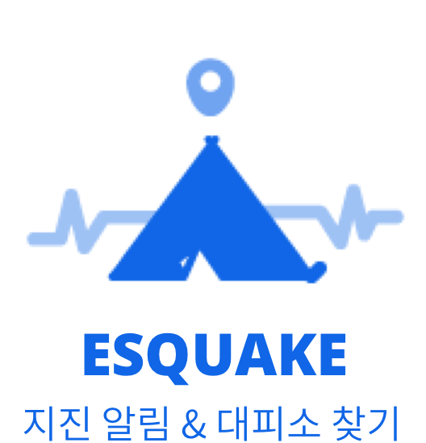

<ion-header>
  <ion-navbar>
    <ion-title>환경설정</ion-title>
  </ion-navbar>
</ion-header>

<ion-content padding>
  <div class="setting-image" text-center>
    
  </div>

  <div class="setting-notification">
    <ion-row>
      <ion-col width-33 text-left>
        규모 2.0 이상
      </ion-col>
      <ion-col width-33 text-center>
        규모 3.0 이상
      </ion-col>
      <ion-col width-33 text-right>
        규모 4.0 이상
      </ion-col>
    </ion-row>
    <ion-range min="2" max="4" step="1" snaps="true" color="primary" [(ngModel)]="minNotification" (ionChange)="changet()"></ion-range>
    <ion-label class="setting-info">지진 알림의 최소 규모를 설정합니다</ion-label>
  </div>
</ion-content>
